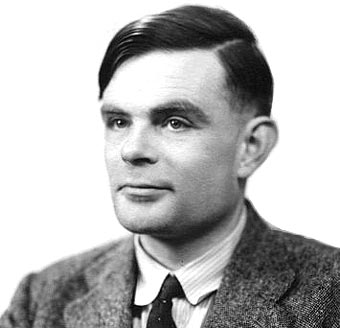
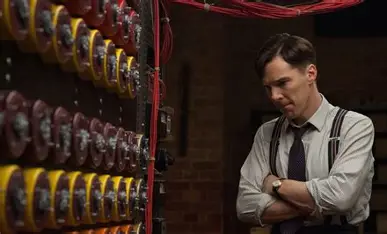
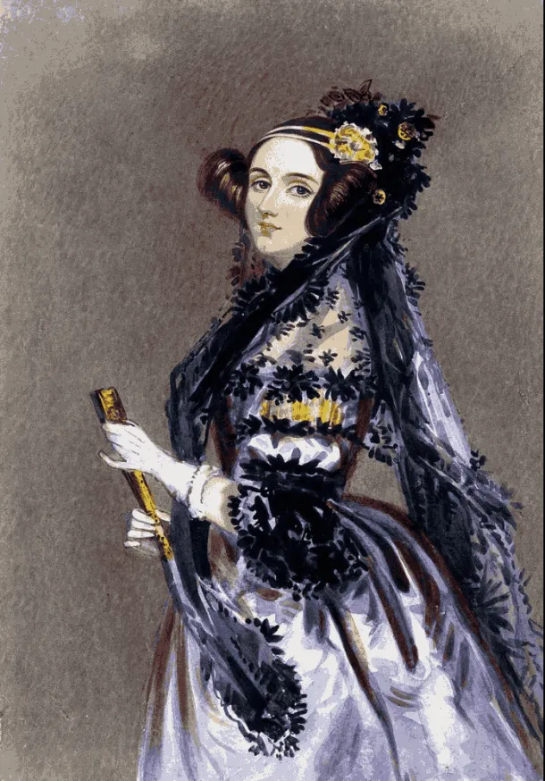
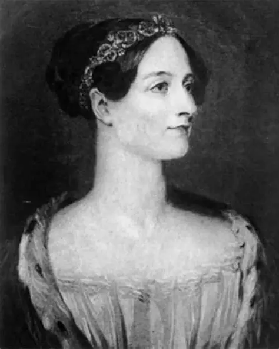

Alan Mathison Turing (Londres, 1912 - Wilmslow, 1954) fue un matemático británico que pasó sus primeros trece años en la India, donde su padre trabajaba en la Administración colonial. Estudió en el King’s College y después se trasladó a la Universidad de Princeton, donde trabajó con el lógico Alonzo Church. En 1937 publicó un artículo célebre en el que definió la llamada máquina de Turing, un modelo teórico de calculadora de capacidad infinita basado en instrucciones lógicas simples. Este modelo sentó las bases del concepto moderno de algoritmo y demostró que podía construirse una máquina computadora capaz de realizar toda clase de operaciones matemáticas.

Durante la Segunda Guerra Mundial, Turing dirigió una división de la Inteligencia británica encargada de descifrar los mensajes codificados que la Marina alemana enviaba a sus submarinos. Diseñó los procesos y las máquinas que calculaban mucho más rápido que cualquier persona, y fueron decisivos para romper el código. Además, propuso el test de Turing, un método para decidir si una máquina puede pensar como un ser humano, y aplicó métodos analíticos y mecánicos al problema biológico de la morfogénesis. Su homosexualidad le causó fuertes presiones sociales y familiares, y su muerte por intoxicación se ha debatido entre accidente y suicidio.

Ada Lovelace nació en Londres y fue hija del poeta Lord Byron y de Annabella Milbanke, una mujer con talento matemático a quien él apodó la “Princesa de los paralelogramos”. Su madre se aseguró de que recibiera una educación científica rigurosa, algo inusual para una niña de su época. En 1833, Mary Somerville la presentó a Charles Babbage, y Ada quedó fascinada con su Máquina Analítica. Mientras Babbage imaginaba una poderosa calculadora mecánica, ella vislumbró una máquina de propósito general, capaz de componer música, analizar sistemas y modelar ideas abstractas, anticipando el concepto de computadora programable casi un siglo antes.

En 1843, al traducir un artículo del matemático italiano Luigi Menabrea, añadió siete extensas “Notas” que triplicaron la longitud del texto. En ellas se incluye lo que hoy se considera el primer programa informático publicado: un algoritmo para que la máquina calculara números de Bernoulli. También planteó que la máquina podría operar con cualquier conjunto de símbolos, no solo con números, un salto conceptual que prefigura la computación moderna. Su trabajo recibió escaso reconocimiento en vida, pero resurgió a mediados del siglo XX con las computadoras electrónicas. Su legado perdura en el lenguaje de programación Ada, en instituciones y universidades que llevan su nombre, y en generaciones de científicas e ingenieras que se inspiraron en ella.
